Menyelidiki Gaya Magnet
Gaya magnet adalah gaya tarik atau gaya tolak yang ditimbulkan oleh suatu medan magnet, yaitu daerah di sekitar magnet di mana benda-benda tertentu dapat dipengaruhi tanpa harus bersentuhan langsung. Gaya ini hanya bekerja pada benda-benda yang bersifat magnetis, seperti besi, baja, nikel, dan kobalt. Ketika benda-benda tersebut berada dalam medan magnet, magnet dapat menarik atau menolaknya tergantung pada kutub yang dihadapkan.
Salah satu keunikan gaya magnet adalah kemampuannya untuk bekerja dari jarak tertentu, tanpa perlu kontak langsung. Oleh karena itu, gaya magnet digolongkan sebagai "gaya tak sentuh", bersama dengan gaya gravitasi dan gaya listrik.
Gaya magnet memiliki beberapa sifat khas yang membedakannya dari jenis gaya lainnya. Berikut adalah sifat-sifat utama gaya magnet:
a Magnet memiliki dua kutub
Setiap magnet memiliki dua kutub, yaitu kutub utara (U) dan kutub selatan (S). Kutub-kutub ini merupakan daerah yang gaya magnetnya paling kuat.
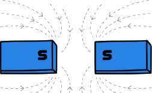
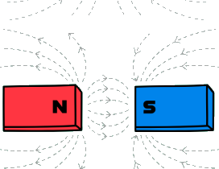
b Kutub sejenis tolak-menolak, kutub berbeda jenis tarik-menarik
Jika dua kutub magnet yang sejenis (misalnya utara dengan utara atau selatan dengan selatan) didekatkan, maka akan terjadi gaya tolak-menolak. Sebaliknya, jika kutub yang berbeda jenis (utara dan selatan) didekatkan, maka akan terjadi gaya tarik-menarik. Sifat ini menjelaskan prinsip kerja pada banyak alat, seperti dinamo dan motor listrik.
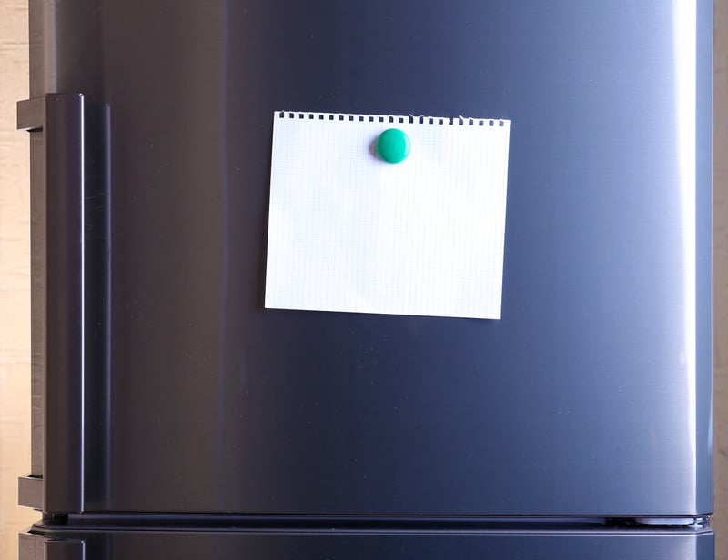
c Gaya magnet dapat menembus benda bukan logam
Salah satu sifat gaya magnet adalah kemampuannya untuk menembus benda tipis nonlogam, seperti kertas, kain, atau plastik. Ini berarti magnet masih dapat menarik benda logam di balik benda-benda tersebut, selama tidak terlalu tebal atau menghalangi medan magnet sepenuhnya.
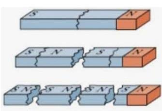
d Magnet yang dipotong akan membentuk dua magnet baru
Jika sebuah magnet dipotong menjadi dua bagian, masing-masing bagian tersebut akan tetap memiliki kutub utara dan kutub selatan. Artinya, kita tidak bisa mendapatkan kutub tunggal (kutub utara saja atau selatan saja) hanya dengan memotong magnet. Setiap bagian yang dipotong akan membentuk dua kutub baru, karena sifat magnet bersifat menyeluruh pada seluruh material magnetisnya.
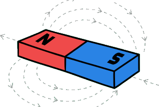
a Magnet batang
Magnet batang berbentuk seperti batang lurus atau balok panjang. Bentuk ini sering digunakan dalam eksperimen fisika sederhana di sekolah karena mudah diamati dan dipelajari. Magnet batang memiliki kutub utara dan kutub selatan di ujung-ujungnya, sehingga medan magnetnya mudah dikenali.
b Magnet ladam / magnet tapal kuda
Magnet ladam berbentuk seperti huruf U atau tapal kuda. Bentuk ini memungkinkan kedua kutub magnet berada dekat satu sama lain, sehingga medan magnet yang dihasilkan menjadi sangat kuat di antara kedua kutub tersebut. Magnet ladam sering digunakan dalam percobaan yang memerlukan medan magnet kuat pada area kecil.
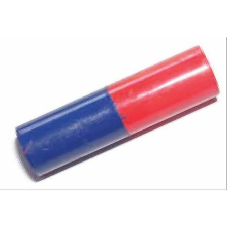
c Magnet silinder
Magnet silinder memiliki bentuk tabung panjang dengan ujung melingkar. Bentuk ini memungkinkan medan magnet tersebar lebih merata di sekitar magnet. Magnet silinder digunakan dalam berbagai alat dan eksperimen yang memerlukan bentuk magnet yang mudah dipasang.
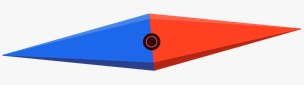
d Magnet jarum
Magnet jarum adalah magnet yang berbentuk sangat kecil dan runcing, biasanya berupa jarum besi yang telah dimagnetisasi. Magnet jenis ini sering digunakan pada kompas, di mana jarum magnetik akan berputar dan menunjuk ke arah kutub magnet bumi, membantu menentukan arah utara dan selatan.
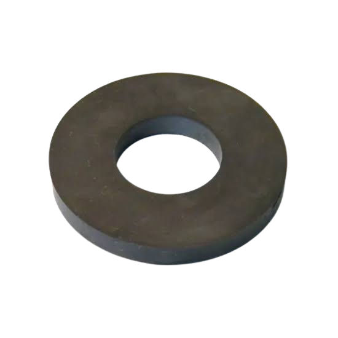
e Magnet cincin
Magnet cincin berbentuk seperti donat atau cincin dengan lubang di tengahnya. Bentuk ini sering digunakan dalam perangkat elektronik dan mesin, seperti dalam speaker atau motor listrik, karena bentuknya yang unik memudahkan pemasangan dan menghasilkan medan magnet yang khas.
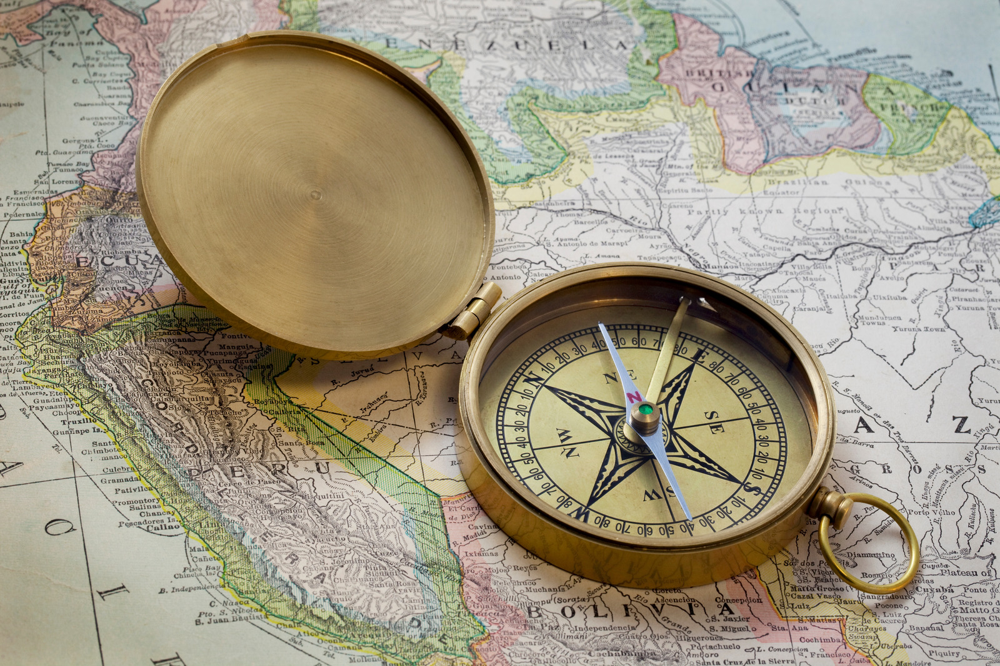
a Membantu menemukan arah (sistem navigasi) seperti dalam kompas
Kompas menggunakan magnet jarum yang sangat sensitif terhadap medan magnet bumi. Jarum magnet tersebut akan selalu menunjuk ke arah kutub utara dan selatan bumi, membantu para pelaut, pendaki, dan petualang dalam menentukan arah ketika berada di luar ruangan tanpa bantuan teknologi GPS.
Cara kerja kompas, jarum di dalam kompas sebenarnya adalah sebuah magnet yang ringan. Karena Bumi kita ini memiliki medan magnet raksasa, jarum kompas akan selalu tertarik dan menunjuk ke arah kutub Utara dan Selatan Bumi.
b Membantu pekerjaan tukang dan industri berat
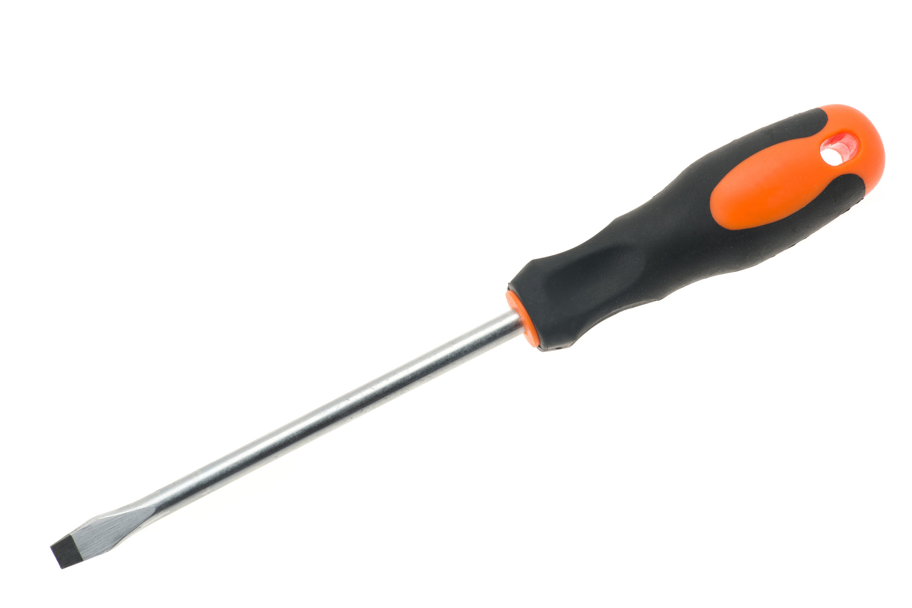
Kekuatan magnet sangat membantu manusia mengangkat benda-benda logam, dari yang ukurannya sangat kecil hingga sangat besar. Contohnya ujung obeng bermagnet: para tukang atau montir sering menggunakan obeng yang ujungnya memiliki magnet. Manfaatnya adalah untuk memegang sekrup kecil agar tidak mudah jatuh, dan sangat membantu saat mengambil sekrup yang terselip di lubang atau celah yang sempit.
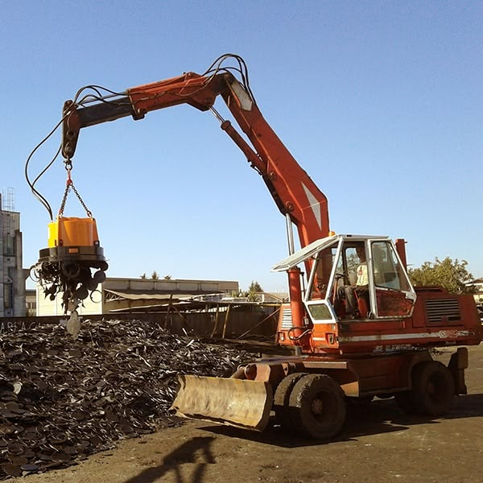
Alat berat ekskavator pemilah sampah: di pabrik daur ulang sampah, terdapat alat berat (derek) yang ujungnya menggunakan magnet raksasa. Magnet ini bertugas menarik rongsokan besi dan memisahkannya dari tumpukan sampah plastik atau kertas dengan sangat cepat.
c Mengubah gerakan menjadi listrik (pada dinamo dan generator)
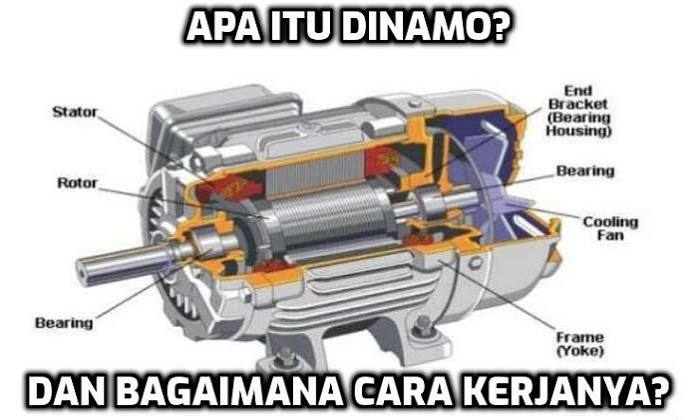
Dinamo dan generator adalah perangkat yang menggunakan gaya magnet untuk mengubah energi gerak menjadi energi listrik. Pada generator, medan magnet yang bergerak di dalam kumparan kawat menghasilkan arus listrik yang dapat digunakan untuk menyalakan lampu, alat elektronik, dan berbagai kebutuhan listrik lainnya.
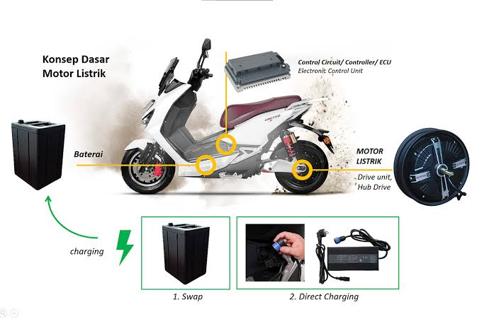
Motor listrik bekerja dengan memanfaatkan gaya magnet untuk mengubah energi listrik menjadi energi gerak. Motor ini digunakan di banyak peralatan rumah tangga, seperti kipas angin, mesin cuci, dan alat-alat industri.
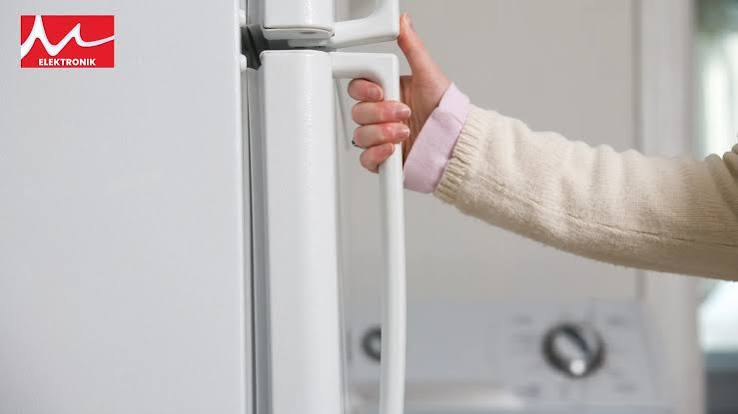
d Alat rumah tangga
Magnet juga dimanfaatkan dalam alat rumah tangga, misalnya pada pintu kulkas, tas, maupun tempat pensil. Magnet sangat hebat dalam menarik benda logam, sehingga sering digunakan sebagai pengunci yang praktis karena tidak perlu diputar atau dikaitkan secara rumit. Pada pintu lemari es (kulkas), di sekeliling karet pintu kulkas ditanamkan magnet memanjang. Tujuannya agar pintu bisa menempel sangat rapat dengan badan kulkas yang terbuat dari besi. Kalau pintunya rapat, udara dingin tidak akan bocor keluar dan makanan di dalam tetap segar.
Pada tas maupun tempat pensil, banyak tas sekolah dan tempat pensil menggunakan kancing magnet. Cukup didekatkan, dan "klik!" tas langsung terkunci dengan aman.
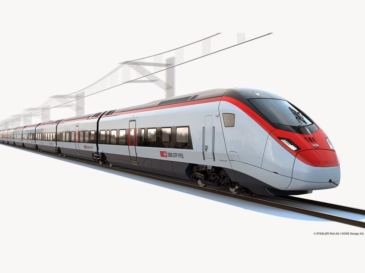
e Menggerakkan transportasi super cepat (kereta maglev)
Di negara maju seperti Jepang dan Tiongkok, magnet digunakan untuk membuat kereta api peluru yang super cepat bernama Kereta Maglev (Magnetic Levitation). Kehebatan Maglev: Kereta ini tidak memiliki roda yang menyentuh rel! Kereta melayang beberapa sentimeter di atas rel karena menggunakan gaya tolak-menolak dari magnet yang sangat kuat. Karena tidak ada roda yang bergesekan dengan rel, kereta ini bisa melaju secepat pesawat terbang tanpa suara berisik.